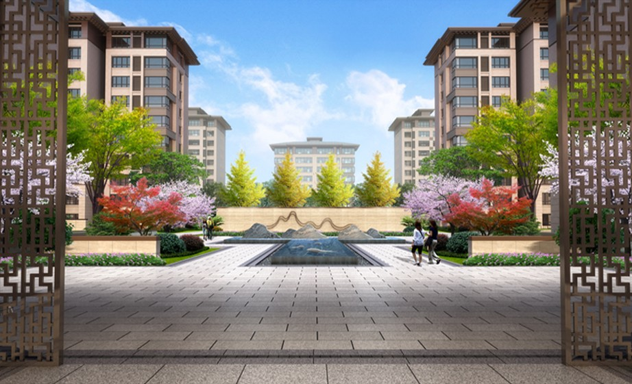
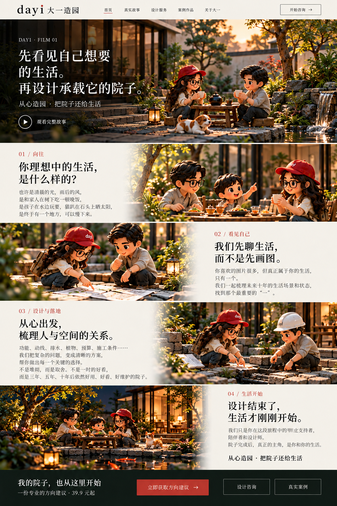
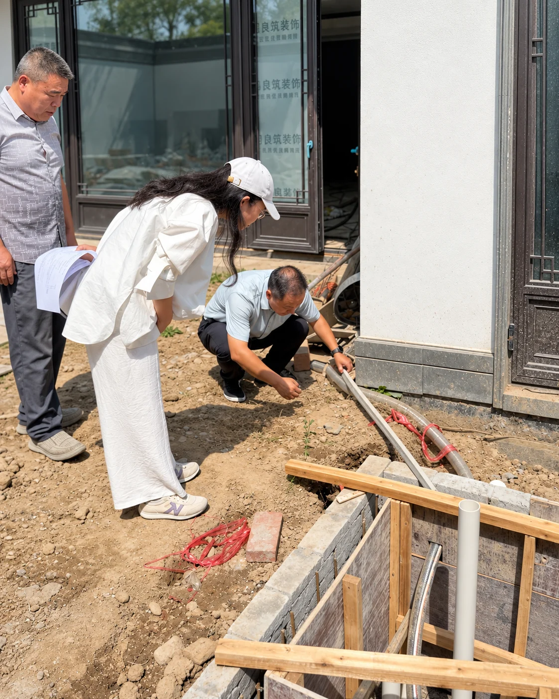
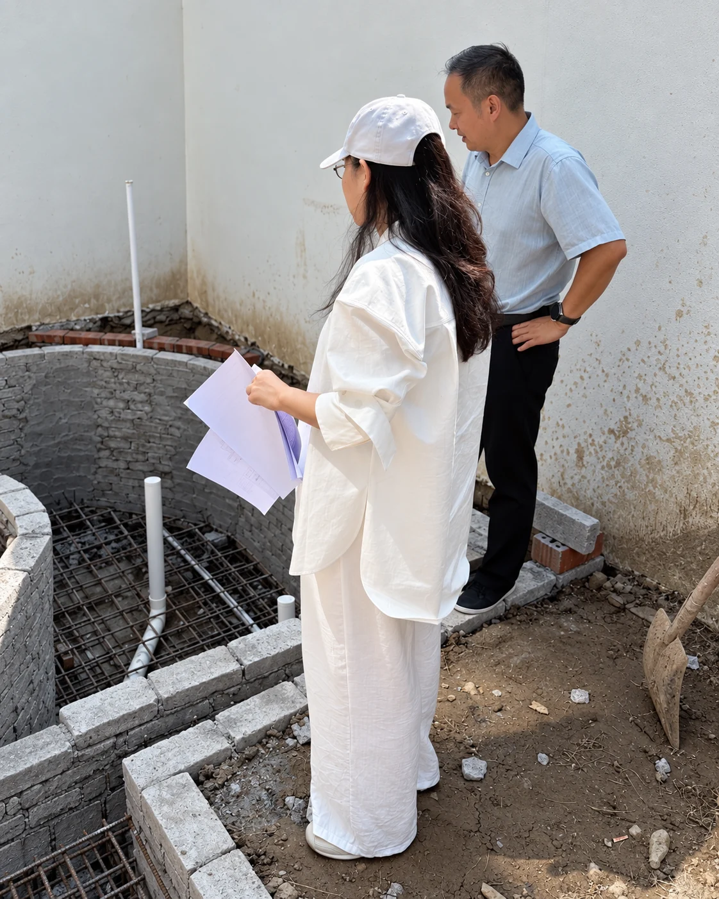

01 / 向往
你理想中的生活，
是什么样的？
也许是清晨的光、雨后的风，是和家人在树下吃一顿晚饭，是孩子在水边玩耍，也是忙了一天以后，有一个地方，可以慢下来。


也许是清晨的光、雨后的风，是和家人在树下吃一顿晚饭，是孩子在水边玩耍，也是忙了一天以后，有一个地方，可以慢下来。


你喜欢的图片很多，但真正属于你的生活，只有一个。我们一起梳理未来十年的生活场景和状态，找到那个最重要的“一”。
功能、动线、排水、植物、预算、施工条件……我们把复杂的问题，变成清晰的方案，帮你做出每一个关键的选择。不是堆砌，而是取舍。不是一时的好看，而是三年、五年、十年后依然好看、好用、好维护的院子。

我们只是你在这段旅程中的临时支持者，陪伴和设计师。院子完成后，真正的主角，是你和你的生活。